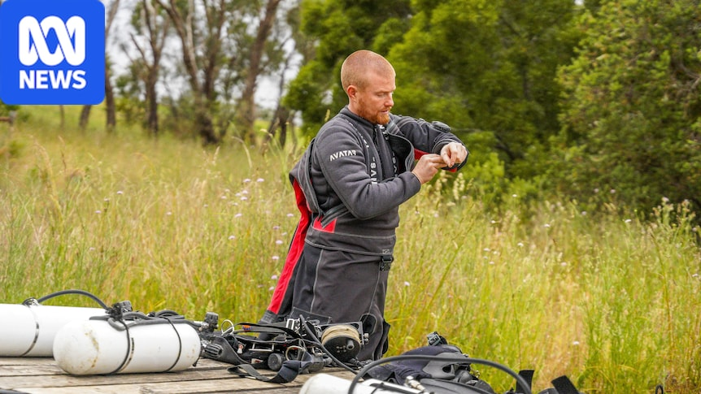

WANEYE RESEARCHAUSTRALIA EDITION
ASX MARKET BRIEF / 29 November 2026 · 07:11 AEST
Read the ASX
with context
Independent signal extraction from Australian reporting, market data and policy context.
52/ 100
MARKET PULSEMeasured confidence
Composite sentiment across today’s source set.
01
THE BRIEF
What matters now
29 November 2026
07:11 AEST
Escalating domestic mortgage stress, negative equity, and regional property corrections raise credit risk
Intensifying market and industry calls for RBA cash rate cuts amid recession warnings and discretionary retail distress
Corporate operational risks heightened by major cyber security breach at Flight Centre
02
CROSS-SECTOR PULSE
An ASX cross-sector scan
Directional intelligence, distilled from the current reporting cycle.
01
Materials / Mining
Base and precious metals rebound alongside active gold, copper, and rare earths exploration, balancing long-term foreign iron ore supply threats.
8 cited sourcesOPEN SIGNAL ↗
02Financials / Banking
Accelerating housing downturn in regional NSW and Adelaide increases mortgage stress, negative equity, and loan loss provisioning.
5 cited sourcesOPEN SIGNAL ↗
03Consumer Discretionary
Household budget strain triggers 'lipstick effect' trade-downs and department store distress, accompanied by corporate recession warnings.
4 cited sourcesOPEN SIGNAL ↗
04Energy & Utilities
Progress toward domestic gas reservation policies while international crude and fuel pricing dynamics remain volatile.
3 cited sourcesOPEN SIGNAL ↗
05Technology & Consumer Services
AI hardware and services rally lifts tech valuations, countered by severe consumer platform cyber exposure.
4 cited sourcesOPEN SIGNAL ↗
03
RISK REGISTER
Know the downside
Likelihood and impact are assessed independently from market sentiment.
Residential Mortgage Arrears & Negative Equity
Underweight high-LVR mortgage lenders; prioritize well-capitalized institutions with diverse revenue streams.
- Impact
- High
- Likelihood
- High
- Evidence
- 3 cited sources
Consumer Discretionary Demand Contraction
Rotate exposure from discretionary goods into consumer staples and defensive infrastructure.
- Impact
- Medium
- Likelihood
- High
- Evidence
- 4 cited sources
Enterprise Cyber Security Breaches
Incorporate incident-risk discounts on customer data platforms and allocate to enterprise cyber solutions.
- Impact
- Medium
- Likelihood
- Medium
- Evidence
- 1 cited sources
Chinese Political Instability & Financial Contagion
Hedge bulk commodity exposure with precious metals allocations.
- Impact
- High
- Likelihood
- Medium
- Evidence
- 3 cited sources
04
POSITIONING
Act on the signal
Accumulate copper, gold, and critical minerals producers
Metals rebound and extensive farm-in/drilling blitzes support near-term earnings and asset inventory growth.
BHP.AXRIO.AXNST.AX
Opportunitiesmedium-term
Tactical exposure to AI infrastructure and technology leaders
Persistent global AI tailwinds and positive market sentiment provide short-term momentum.
NXT.AXWTC.AX
Opportunitiesshort-term
Trim exposure to major domestic mortgage banks
Negative equity, regional housing price declines, and mortgage stress threaten credit quality and margins.
CBA.AXWBC.AXANZ.AXNAB.AX
Defensiveshort-term
Underweight high-ticket consumer discretionary retailers
Structural discretionary spending pullbacks and recessionary pressures heighten retail margin degradation.
HVN.AXJBH.AX
Defensivemedium-term
05
FORWARD VIEW
The road ahead
1—3 MONTHS
Range-bound ASX 200 (^AXJO) performance as resources and technology gains offset domestic banking and retail headwinds.
6—12 MONTHS
Broader valuation reset dictated by RBA monetary easing timeline, household deleveraging, and Chinese economic demand.
06
SOURCE INTELLIGENCE
Reporting behind the view
Selected Australian source headlines referenced by the analysis.
ABC News · 2026-11-28 20:52:58 UTC
Rescued calf grows into one of Australia's tallest steers
VIEW STORY ↗
ABC News · 2026-11-28 20:48:02 UTC
Parent killer believed she got away with murder but a jury found her guilty
VIEW STORY ↗
ABC News · 2026-11-28 20:35:04 UTC
Manchester United suffers unwanted records after 4-0 loss to Brentford
VIEW STORY ↗
ABC News · 2026-11-28 20:30:29 UTC
Divers barred from speaking out about rescue from notorious cave
VIEW STORY ↗ABC News · 2026-11-28 20:00:03 UTC
Live: Jess Wilson begins work after emphatic victory
VIEW STORY ↗ABC News · 2026-11-28 19:44:03 UTC
Piastri has best qualifying since September, world champ annoyed with team
VIEW STORY ↗CURRENT RESEARCH
Three regions. Three connected views
Move from the executive brief through sector signals, risks, positioning and supporting reporting.
03Current regional reports
03Market editions
HourlyAnalysis cadence